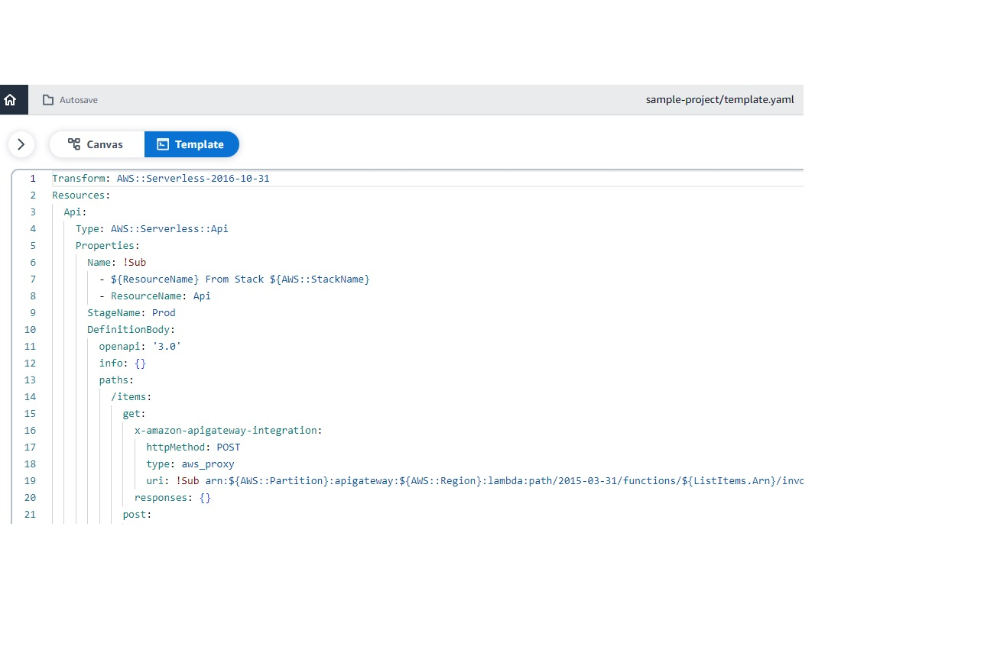

SCC
Brasil
os cloud gurus
Software Cloud Consulting
Your software development, cloud, consulting & shoring company
AWS Application Composer - How to get started
By Wolfgang Unger
Introduction
How to get started with AWS Application Composer?
AWS Application Composer was announced quite strong on the last Re-Invent, so time
to have a closer look on the
new service.
This is a short tutorial on how to use AWS Application Composer and also a feedback on the status of the service.
See also this video in my youtube channel :
Getting started with AWS Application Composer
I have to say first, I am a little bit surprised it was announced so strong as new Service, since AWS actually got
a similar service for many years.
Many might not know it, but in CloudFormation you find the 'Designer' which offers a similar functionality and this for many years.
If you have never used it, this is what it looks like, you find it under CloudFormation.
You can drag and drop your resources there also, a CloudFormation template will be generated, you can chose between Json and Yaml Code and
you can also paste your existing IaC there and let it generate a architecture diagram for you.
It also serves great as Json vs Yaml (or vice versa )Converter.
Get started
When you open the AWS Application Composer Console you can open a Demo - which is good idea to get started or Create a new Project .
The Demo looks like this:
You can see the Canvas where you can drag and drop your resources.
You can switch to see CloudFormation View and will see this screen:

As you might have seen on the Overview Page, you can download a Visual Studio Plugin (among others) and work with Application Composer in your local IDE.
In Visual Studio it looks even a little bit better :
To work with Application Composer you not only need the Extension, but you also have to open your project folder from your local drive in Visual Studio. Otherwise you won't be able the Extension/Plugin.
Some first tests for drag and drop
On the left side, you can choice from 'Enhanced Components' and 'Standard IaC Resources'.
So far there are 14 Enhanced Components, mostly Serveless resources.
We will create a Serveless application in a second, let's have first a look on the Standard Resources.
What about, you have to create a VPC, this is quite a usual use-case, first thing before creating
Databases or Fargate-Services or EC2's will be a VPC.
So I drop a VPC to the canvas. What I get as IaC is :
Resources:
VPC:
Type: AWS::EC2::VPC
Properties: {}
So really just a skeleton of the CloudFormation Code for a VPC.
A real VPC with Subnets, IGWs, NWGs, Routes etc and full functionality might have 500 lines of Yaml Code.
To create this with the Canvas you have to add all these resources like Subnets also and connect them with each other.
A lot of work... You will be much faster if you use your existing VPC stack ( which you have created on a former project) and
adapt a little bit for your current project.
Same is valid for a lot of Services, for example a Fargate Service will need a ECR-Repo, a Cluster, a Task Definition with Env Variables, a Service, a Target Group for the Loadbalancer etc
To create this on the Canvas you will not be faster as re-using and adapting an existing CFN Template.
I am missing here on thing:
In CDK for example you have L1, L2 and L3 constructs.
A L1 constructs represents one resource like a VPC or one CloudFormation Resource (CDK will generate a CloudFormation Json in the Sync Step)
But there a L2 and L3 constructs for higher level abstractions of resources.
L3 constructs offer already a composition of components and with these resources it is quite easy to create for example a Fargate Service.
Would be great to choose from this type of resources here also.
So a real VPC, a composition of Subnets, IGWs, NGWs, Routes etc or a ECS Patterns like a Loadbalanced Fargate Service.
With just the basic IaC resources you will not be able to work really fast and productive in Application Composer.
Fist project - a Serveless Application
Create a new project folder on your local disk and insert a new and empty template.yaml
In the WebConsole you can press 'New Project' and then open this project folder in the menu on the top, right side .
Now we can drag and drop our fist resources.
Api Gateway
We start with a API Gateway.
On the Canvas you can select a resource and open its properties,
the details will appear
on the right side (for example the API Gateway):
We can add our methods there, for example :
GET /items
GET /items/{id}
PUT /items/{id}
and more like DELETE, but for now should should work, we can test, if the basic functionality is working.
Lambdas
Now we can drag and drop our Lambda Functions, the properties look like:
You should adapt your Runtime and the source Folder and of course the Logical ID.
I am using Python 3.11 for this example.
Now you can connect the API Gateway methods which the Lambda Functions on the Canvas.
This works really nice and speeds up the coding process indeed.
DynamoDB Table
Next we add a Dynamo Table to the Canvas, which will be our Database for the items.
The Dynamo Table Properties:
As you can see, there is a Logical ID and Partion Key. You can also define a sort key, I won't, to keep the example simple.
But a note on the logical ID:
If we just define the name of the Dynamo Table in this ID and sync/deploy our to our target account,
the SAML CLI will create a table with a name like this: StackName-Items-RandomLetters.
This will cause us trouble, since we want to access a table named 'Items'.
The properties of the Canvas are not designed well on this.
You have to switch to the CloudFormation Template View and add in the DynamoDB properties:
TableName: Items
I hope, they are going to fix this issue soon.
Now you should also connect the Lambda Functions with the DynamoDB in the Canvas.
So by now your API methods should be connected with each Lambda and the Lambdas must be connected with the DynamoDB.
Project Structure
Lets have a look in our project folder, what happened by now

So besides the template.yaml, there is also a source folder for our lambda code and three subfolders.
We can now adapt the Python code to implement a basic functionality.
To list all items for example:
import json
import boto3
dynamodb = boto3.resource('dynamodb')
def handler(event, context):
# Log the event argument for debugging and for use in local development.
print(json.dumps(event))
return read_all_items("Items")
# read all items from a dynamodb table
def read_all_items(table_name):
table = dynamodb.Table(table_name)
response = table.scan()
return response['Items']
Please implement also readItem and updateItem, CodeWhisperer can help you on the implementation.
Deployment
Now we can deploy our little serverless application and test, if it works.
To do so, you have to press the Button 'Sync'
You have to select a region, define the CloudFormation Template Name and also define a S3 Bucket.
You will see on the Console/Terminal there's something going on:
Once done, you will find a API Gateway, the 3 Lambdas and a Dynamo Table. This time also with the correct Table Name.
Time to test our application.
Test
You can test your Lambdas directly with a Test Event.
The getAllItems Functions don't expect parameters, so you don't even have to adapt the Test Event.
Before you test the method, you should create in Dynamo a test entry, otherwise you will just recieve an empty array as result.
If you did everything correct, your Lambda will now return your test item from Dynamo.
So looks like it works quite well.
Now, we can also test our API Gateway.
Before we can test our Lambdas from API Gateway, we have to adapt the response body in the Lambda Code.
The response for API Gateway should look like this :
def handler(event, context):
# Log the event argument for debugging and for use in local development.
print(json.dumps(event))
items = read_all_items("Items")
response = {
"statusCode": 200,
"body": json.dumps(items),
"headers": {
"Content-Type": "application/json"
}
}
return response
Switch to API Gateway and to the method
GET /items and then 'Test'
You should see the following:
Our serverless application works like a charme, the communication from API Gateway to Lambda and to DynamoDB is correct and it was really kind of easy, setting the whole thing up.
But of course this was just a simple Hello World example.
For more advanced architectures, you will have more work .
Conclusion
The Drag and Drop functionality is nothing really new. CloudFormation Designer offers this already for years.
The integration with Visual Studio is quite nice, but the Canvas still got some issues on the properties, like
for example the Name of a Dynamo Table.
Also Drag and Drop and the Creation of a Composition of Resources, like a VPC, is still not really very productive or faster
than coding CloudFormation.
Serveless Applications are supported well, also the resources therefore inside the 'Enhanced Components',
but still some work to do on the other resources for full support of the most important properties in the Canvas .
Autor

Wolfgang Unger
AWS Architect & Developer
6 x AWS Certified
1 x Azure Certified
A Cloud Guru Instructor
Certified Oracle JEE Architect
Certified Scrum Master
Certified Java Programmer
Passionate surfer & guitar player